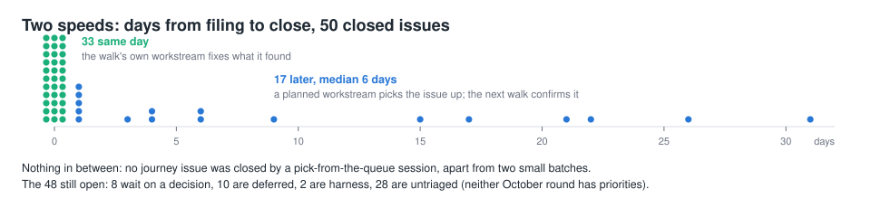
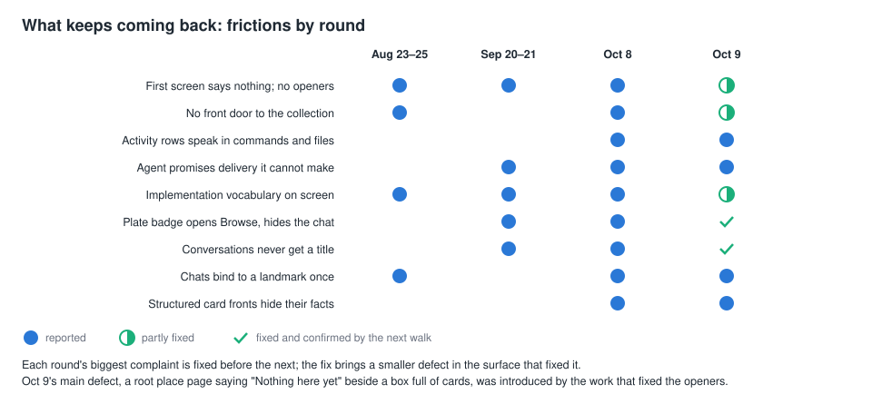
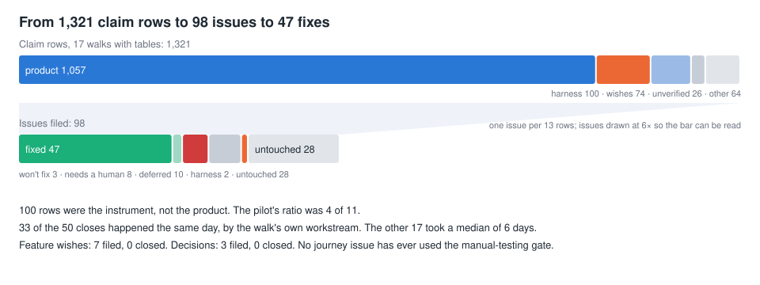
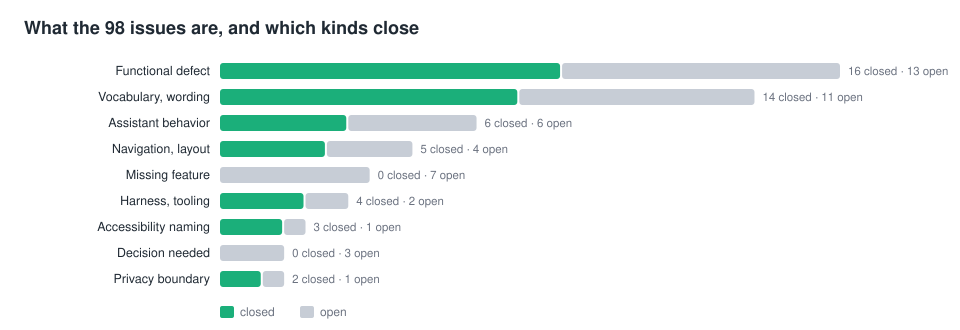
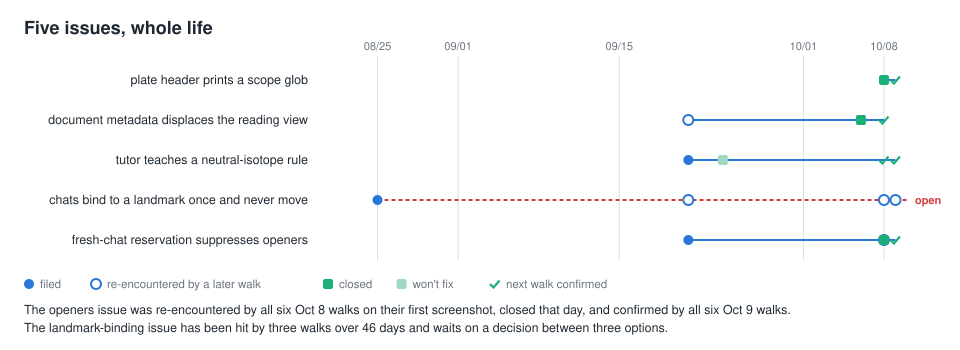
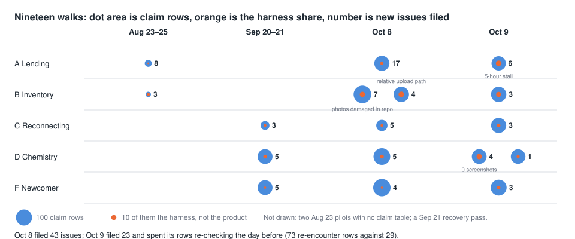

103 chunks (number 29 · quote 13 · contrast 27 · case 10 · rule 11 · timeline 7 · figure 6). Each card is one observation in its kind's layout; the phrases at the bottom are the cues a co-presenter matches against speech. Source: the .md files in this directory; rebuilt by build.ts.
rule after-action-verify
Bug reports from test agents
The agent playing a user notices. A second pass checks.
On 2026-08-24, three of the seven bugs a walk reported were ours …
> Nothing from a walk becomes a finding until it has been separately verified.
> The walker's job is to notice. Yours is to find out what actually happened. three of seven were ours check before filing its job is to notice false bugs the review pass
number alerts-peak
Automatic warnings
Too many warnings, so now I get one summary a day
143
warnings in September, up from 47 in August; on Sep 18, one 9 a.m. summary
172 of 229
warnings I closed myself
too many warnings a hundred forty-three interrupt me only if it cannot wait a day one summary a day rules for when to warn
number answer-loop-thin
Where my answers go
Agents ask me questions on a page. I answer in chat.
4 / 128
pages of screenshots I answered on the page itself
1 / 65
agent sessions that looked for my notes on a document, then cleared them
four of a hundred twenty-eight nobody answers on the page answers come back through chat notes on the document the return side
number audit-rerun-nine-gaps
Quizzing the agent
I quiz the agent to find what nobody told it
9 / 217
questions showed a real gap in its instructions; all fixed
31
were out of date: the right answer had moved
quiz the agent did the instructions reach the agent the July rerun nine real gaps the answer had moved
quote blind-spots-shared
Second-model review
A different model family reviews every piece of work
A model can't catch the blind spots it shares with itself. From our write-up of how we work
why another model the other model family blind spots a model reviewing itself second reader
number browse-indirect-development
The agents' browser tool
Agents fix their own browser tool while doing something else
86
commits change the browser tool
21 of 24
commits naming a task came from some other task; 7 from scripted walks
the browser tool I never drive the browser fixed in passing other tasks indirect development
rule browse-silent-clicks
The agents' browser tool
The browser said "done" when the click hit nothing
… refuse silent clicks, and put ids on every static control
agent-browser's click is a box-center mouse event with no preconditions:
disabled, covered, off-screen, zero-size ... all report '✓ Done'.
A journey walker read those as the app doing nothing. silent clicks it said done the app doing nothing refuse the click an id on every control
number calibration-pilot
Shortening a prompt
I test a shorter prompt on four models before keeping it
4 × 12
models × test cases on where a request should go
5
scenarios on who may decide what; every limit set in advance held
tested on four models did the cut break anything which request goes where who may decide what the only test across models
rule careful-tier-demoted
Unreliable tests
I demote tests that fail at random. Nobody deletes them.
They are not deleted for being a nuisance; they run less often and more
carefully.
Membership is a judgment, not an automatic demotion. slow lane tests that fail at random quarantine demoted not deleted a judgment call
contrast cluster-is-a-hypothesis
Grouping issues
Issues that look alike are a guess until you read them
Without reading
an agent grouped eight issues by title, decided my live calendar was at risk, and started work
Now
a group of similar titles is "a reason to read, not a finding"
a group is a guess grouped by title without reading them read every one
contrast codex-day-one
Adding a second agent
A second agent means setup can't live inside one tool
Before
setup and cleanup ran inside Claude's own scripts; OpenAI's agent ran none, and about ten checkouts piled up on day one
After
one shared command creates and cleans up checkouts; OpenAI's agent, timed jobs and a third-party model all use it
OpenAI's agent arrived checkouts piled up no cleanup ran one shared command the second agent
timeline codex-mirrors-timeline
One file, two agents
It took three tries to give both agents one instruction file
05-26 a stale, partial copy for the second agent removed 08-04 a generator copies every instruction file, uncommitted 09-16 agent definitions copied too 10-09 all 20 files renamed to a name both read instructions for the other agent three designs a copy that went stale a generated copy both agents read it
contrast codex-reviewing-codex
Second-model review
My second-model review only worked when Claude wrote the code
Before
when OpenAI's agent did the work, it reviewed itself: "a same-model self-review wearing the costume of the cross-model check"
After
"The reviewer must use the other model family, regardless of the driving model."
OpenAI's agent reviewing itself same-model review one direction only the other model family
rule could-this-be-simpler
Writing plans
Every plan has to say what its complexity buys
<!-- A gate, not a section. … If you can't
name what the complexity buys, shrink the plan. --> could this be simpler the plan template what does the complexity buy shrink the plan over-building
case craft-skills-retired
Retiring instruction files
Models already know how to debug. They need our steps.
Instruction file Why debugging, front-end work, testing "Current models debug and build UI without a skill" code health it recommended a code layout our style guide forbids kept: landing on main, second-model review, planning, browser driving, filing issues among the most used
teaching instructions how to debug how to build UI current models do this already retired into docs
number cross-model-catches
Second-model review
The other model family catches more than anything else
134
commits where the other model's review found something
55
issues it found; 41 closed
second-model review what the other model found OpenAI's agent found it review catches fifty-five issues
number cull-zero-unknown
Automatic cleanup
Finished checkouts clean themselves up. Nothing goes on a guess.
144
separate checkouts removed without me
0
times it couldn't tell whether an agent was still there (793 skipped because one was)
zero unknown it cleans up after itself no step for me it never deletes on a guess a hundred forty-four
contrast cut-regrow-budget
Trimming instructions
Instructions I trim by hand grow back. The one with a word budget doesn't.
Trimmed by hand
114 lines back up to 184; 850 words back up to 1,277
With a budget
5,555 of 5,595 words, held, and it caught one overrun
a cut without a budget does not hold it grew back the one with a budget held word budget
contrast dev-audit-answer-key
Quizzing the coding agent
My first quiz passed because the agent read the answer key
Before
"eight entries … all passing"; the agent could open the answer file and copy from it
After
answer files blocked; "Seven of eight passed on the first clean run"
the agent read the answer key all passing seven of eight quiz the coding agent
timeline doc-check-timeline
Checking the docs
Doc checks started as a report. Now they block commits.
03-04 a report lists unlinked docs and broken links 07-04 broken links block commits 09-13 a plan's status must match its folder 10-07 every path a doc names must exist; 85 fixed broken links out-of-date paths eighty-five references docs commits fail checking the docs
quote doctest-tap-for-agents
Test output
I write test output for an agent, not for me
the consumers of test runs are agents reading through a pipe The commit that took the color out of all our test output
plain test output no color reading through a pipe who reads test output
number doctests-are-most-tests
Tests as documents
Most of our tests are documents an agent can read
1,035 / 142
test files written as Markdown documents, against ordinary code test files
83%
of all test lines are in the documents
tests are Markdown the agent reads and writes the tests a thousand test documents eighty-three percent
quote evidence-stays-in-tree
Keeping the evidence
It's all in the project, so I can ask what happened
by putting things like issues in the repository, and plans, and setting up Me, in my notes for this talk
evidence left over it's all in the project I can ask what happened read the record not from memory
contrast example-contamination
Examples in prompts
Give a model an example and it copies the details
Before
a worked example of a new session's instructions; models copied its invented details into real ones
After
no example, just fill-in fields
worked example they copied the example invented details fill-in fields
rule exhibit-one-ask
Questions from agents
Every page an agent sends me asks exactly one thing
Every exhibit carries exactly one ask.
…
`fyi` is not a dumping ground and a
real decision tagged `fyi` is a decision that never gets made. exactly one ask decide confirm react or for your information not a dumping ground a decision that never gets made
number feature-wishes-never-close
Wishes from test walks
Agents playing users ask for features. None has closed.
7 / 0
missing-feature issues, open / closed
3 / 0
issues waiting on my product decision, open / closed
feature wishes never closed seven and zero needs a decision what the agent wished the app had
number fifteen-re-encounters
Repeat sightings
The test walks keep hitting the same bugs
15
repeats noted in one day, 8 on issues older than the walks
6
issues that went back to me for a decision
fifteen times hit it again the walks keep hitting it ask me to decide priority may be stale
case filed-vs-closed-by-month
Backlog, median age 45 days
We file more issues than we close, every month
Month Filed Closed Jul 336 112 Aug 448 298 Sep 329 208 Oct (9 days) 111 103
filing outpaces closing more filed than closed the backlog keeps growing every month
timeline finish-agent-lines
Instructions for landing work
Instructions grow until the mechanics move into scripts
07-03 175 lines 08-08 624 lines 08-25 two scripts take over the mechanics 08-30 165 lines mechanics into scripts the landing agent grew six hundred lines moved into scripts
rule flake-single-rerun
Unreliable tests
A random failure gets one rerun, then it gets named
A failing test file is re-run once in isolation: passing there is a flake …
and is named, not hidden; failing again is real and blocks. a test that fails at random rerun it never rerun to chase green rerun once alone named not hidden
case four-issues-four-fates
The message box
Four issues, found four ways, settled in one sitting
Issue Found by Outcome attaching in the message box is awkward a prototype tried in the field landed, waiting for me to try it cancelling a batch loses photos the other model's review landed, waiting for me to try it a draft ends up inside another message a scripted walk implemented pasting a WebP image is rejected a scripted walk's test files won't fix: the premise did not hold
grouping issues issues come from different directions one session settles them the message box
case full-suite-red-fates
871 hourly test runs
Running every test hourly: 29 alarms, 11 real breakages
Outcome Issues fixed: a real breakage 11 replaced, mostly from the job blaming its own report 16 won't fix 1 open 1
the hourly test run failing on main find the commit that broke it eleven real breakages
rule grows-unless-pruned
Pruning instructions
Instructions only grow. Every edit must cut more than it adds.
Agent and skill files only ever grow unless pruned: when touching one,
remove more than you add, move mechanics into a script the agent runs,
keep only rules that need judgment, and give a rewrite a line budget. only ever grow remove more than you add line budget unless pruned the files keep growing
contrast guards-keep-no-record
Checks before every commit
My commit checks block things. I don't know how often.
What they check
home-folder paths, a personal blocklist (blocks when unsure), the old product name, private keys, broken doc links, file layout
What they record
nothing; how many commits they blocked is unknown
checks before every commit leaked home path personal blocklist the old product name how often did it block we don't know
number guide-ledger-budget
The in-app agent's instructions
I gave the instructions a word budget. It holds.
11,435 → 5,555
words I wrote, then words the agent receives; the budget is 5,595
5,705
words once on main; an agent filed an issue instead of raising the budget
the in-app agent's instructions a word budget the check enforces it every rule earns its place an agent filed an issue
contrast host-memory-ceiling
Parallel agents, one Mac
With nine agents at once, memory runs out before anything else
Before
about nine agent sessions at once, and 20 GB of swap (disk used as overflow memory)
After
full test and check runs share two slots, and wait while the machine is swapping
the machine ran out of memory eighteen gigs of swap two slots the limit moved to the machine nine sessions at once
contrast how-much-to-do-ladder
Four levels of permission
"Go ahead" meant four different things. Now it means one.
Before
I had said "go ahead" in 129 sessions, and each agent guessed whether that meant discuss, plan, build, or ship
Now
four named levels (discuss, plan, do, land); when my wording is unclear the agent takes the lowest one and says so
go ahead what does go ahead mean discuss plan do land how much to do the lowest level the wording supports
number humans-type-three-skills
Who picks the skill
I name three skills, reusable instruction files. Agents pick the rest.
128
sessions in 60 days where I typed "finish" to land the work
8 / 4
times I typed the issue-grouping / issue-triage skill; agents chose all others
I only type finish nobody types the skill name the agent reads the description picking issues by hand a hundred twenty-eight
contrast instrument-before-gate
Instruments before gates
Count first. Then make the rule.
Counted
1,915 test runs logged before any policy on random failures; every instruction file's use counted before any was retired
Then gated
a one-rerun policy, six files retired, a check on new ones, each pointing at its count
measure first count before you cut the log came first no rule yet then the rule
case instruments-and-gates
Count, then rule
Every rule came after a count. Except the commit checks.
What I counted The rule it led to every test run one rerun for a test that fails at random tokens the agent is handed in each quiz of what it knows a word budget on the in-app agent's instructions how often each instruction file is used 6 files retired, automatic checks on them the checks before every commit: nothing none; their blocks are not counted
what was counted first which count led to which rule count it before you enforce it the commit checks count nothing
contrast issue-file-per-tension
Keeping track of ideas
One file per issue. The folder is the status.
Before
one ideas file, 39 lines, then 1,681; "some items carried pages of agent research, others were a few words"
After
one dated file per issue; the folder is the status, closing is a file move, text search is the query
the ideas file one big file one file per issue closing is a file move the folder is the status
figure journey-days-to-close
Days to close
Most bugs simulated users find are fixed the day they're filed

50 closed issues: 33 the same day, 17 spread out to 31 days
days to close fixed the same day stacked at zero the long tail thirty-one days
contrast journey-definition
Why simulated users
The feature list had no people. Walks give the user a reason.
Feature list
649 lines of "the product can do X"; "It has no notion of a person with a motive."
Walk
"a goal from someone's life with a reason attached, because the reason decides what a good outcome looks like."
what's a walk a person with a goal the feature list can't see it a reason attached six hundred forty-nine features
figure journey-friction
Recurring problems
The same complaints come back, round after round

A badge and chat titles: fixed and confirmed. Rows saying "ran 2 commands": still there
keeps coming back every round same complaint the first screen says nothing ran two commands
figure journey-funnel
From report to fix
Most of what the simulated users report never becomes an issue

1,321 reports, 98 issues, 47 fixed; 100 reports were about the walks themselves
thirteen hundred reports ninety-eight issues the funnel most reports never become issues forty-seven fixed
figure journey-kinds
What kind of issue
Bugs get fixed. Wishes and decisions just sit.

98 issues: 29 bugs, 16 closed; 7 feature wishes and 3 decisions, none closed
what kind of issues bugs close wishes don't decisions don't close nine kinds
figure journey-stories
The life of an issue
Five issues, five different endings

Fixed same day; waited 15 days; won't fix; still open; hit six more times, then fixed
five issues whole life one fast one slow won't fix still open hit six times
timeline landmark-chat-never-closes
A chat stuck in one place
One question for me has waited since August
08-25 filed with three options, waiting on my decision 09-21 the code is reread: the chat still never moves 10-08 "I lost my chat with the two panels"; I'm asked again 10-09 hit again under the new "Go to Loans" button still open waiting on my decision I lost my chat since August forty-six days
contrast launchd-came-back
Retiring old timed jobs
I turned off the old timed jobs. They came back at login.
Turned off
four jobs in the Mac's built-in job scheduler, but their files stayed
Next login
they came back, and one job would have run twice a day
the Mac's scheduler the old jobs came back at login it ran twice a day a false start
number ledger-flake-load
Tests that fail at random
Logging every test run showed me which tests fail at random
717
test files have failed at least once, in 1,915 logged runs
49
fail at random; each one gets fixed or deleted
every run recorded which tests have ever failed tests that fail at random forty-nine fix or delete
contrast liveness-fail-closed
Cleaning up finished checkouts
Unsure whether an agent is done? Cleanup leaves the work alone.
Before
cleanup deleted even when unsure; a review by another AI model family caught it
After
unsure counts as still working, and nothing overrides that, not even force
unknown counts as still working fail closed force does not override it the check that deleted when unsure
number manual-testing-gate
My catch-up list
Code lands faster than I can try it
25
things waiting for me to try on the real app
nobody has tried it yet code lands faster than I can try it my catch-up list twenty-five open
number mechanics-into-scripts
Instructions into scripts
If it's a list of steps, it should be a script
624 → 165
lines of instructions for the agent that lands work on main
377 → 150
lines on getting a review from another AI model family
move it into a script the landing agent was six hundred lines the review instructions halved step-by-step prose
quote meta-instruction-first
Agents editing their instructions
When I correct an agent, it fixes its own instructions
When you get corrected on something … consider whether the correction The first version, in the app's instruction file
when you get corrected write a rule self-improvement the agent edits its own instructions
contrast meta-instruction-routing
Where new rules go
A new rule goes where it applies, not into one big file
Before
"update this file (or the relevant doc) so the next agent doesn't repeat it"
After
"put a short rule at the narrowest accurate owner": this file, one area's file, style docs, or reference docs
narrowest accurate owner where does the rule go it still writes rules but somewhere else not everything in one file
contrast monorepo-one-agent
Why one repository
An agent is equally good in every area at once, so I merged the repositories
Five repositories
a person specializes, so the server, the extension, and the phone app each had their own checkout and their own expertise.
One repository
the agent has no specialty, so a change that crosses all three is one piece of work. 46 of 154 pieces of work since late August touched more than one package; the phone app with the server is the most common pair.
equally good in every area why one repository cross-repo changes five repositories became one the phone app and the server together
number no-disable-lint-rule
Style checks
Agents fix the code. Switching off a check needs a reason.
172 / 190
switched-off style checks that give a written reason
don't switch off the check fix the code suppressions the one allowed exception give a reason
quote not-verification-ritual
Choosing which tests run
Running tests that touch nothing isn't verification. It's ritual.
if three quarters of branches touch code no test imports, running 484 tests for From my plan to pick tests by what changed
ritual running all the tests anyway this code has no tests three quarters of branches four hundred eighty-four tests
quote nothing-here-yet
An empty first page
A page said "Nothing here yet" to a user with plenty there
If I came back tomorrow and landed on this, I'd think it had lost everything. The agent playing the user, on a page that said "Nothing here yet" while its data was all there
nothing here yet lost everything empty page came back tomorrow the fix introduced it
number old-plans-read
Do old plans matter?
Agents keep reading my plans long after the work ships
144 / 214
shipped plans read at least once
269 / 479
of those reads came a week or more after landing
do agents read old plans nobody reads the plan plans after they ship a week later
case open-journey-issues
Why issues stay open
48 issues open: 8 wait on me, 28 nobody has touched
Reason Count Waiting on my decision 8 Put off by label or priority 10 A problem with the walks themselves 2 Nobody has picked it up (24 from October) 28
why are they open eight wait on me nobody picked it up forty-eight open untriaged
timeline openers-fixed-then-nothing-here
The first screen
Fixing the first screen created the next problem
09-21 a bug skips the starter suggestions in a new chat 10-08 every walk hits it first; fixed that day 10-09 all six walks: fixed. A page now says "Nothing here yet" the first screen every walk hit it fixed and confirmed the fix brought the next one starter suggestions
contrast opus-at-12-04
Watching for new library releases
The agent wakes up only on days there's news
Before
a Claude Opus session started "every day at 12:04"
After
a cheap script checks first, so the session "starts on the days something was actually published"
every day at noon only when something was published a cheap check first the agent stays asleep
number pace-and-size
How big it got
Just me and the agents, and it kept growing
25 → 2,305
commits per month, January to August
11,858 → 390,172
non-blank lines of code, February to October
the pace curve commits per month how big it got one author four hundred thousand lines
timeline package-file-line-series
The app's instruction file
I cut the app's instructions in half. They grew back.
03-03 cut from 218 to 118 lines in one day 03-06 114; agents now update it after corrections 09-05 back to 184, one rule per commit 09-12 a planned rewrite cuts it to 67 halved in a day it grew back one rule per commit two hundred eighteen lines sixty-seven lines
quote partial-plan-violation
Shipping plans
Half a plan doesn't ship, even when it feels done
The plan completes, then it ships as one piece … merging a partial plan From the instructions agents use to write plans
the first part feels done merge it anyway ship half the plan partial plans ships as one piece
number pick-issues-batching
Grouping related issues
Issues arrive one at a time. I ship them in batches.
6
groups claimed or closed in the two days after grouping began
26
commits on main that close two or more issues at once
grouping issues batching the backlog builds up six groups one commit closes several
number plans-written-and-partial
Plans
Most plans ship. Many of the rest are partly done.
324 → ~199
plans written, then plans implemented
41 / 71
plan status lines that say partial
how many plans plans get implemented partial plans pile up three hundred plans half done
number prompt-calibration-cut
The big rewrite
One planned rewrite cut my instructions by more than half
2,242 → 850
words in the instruction file every agent reads first
184 → 67
lines in the app's instruction file
the biggest cut remove attempts to convince a planned rewrite purpose and necessity more than half
case prose-rule-then-refusal
Rules versus checks
A written rule doesn't hold. A check does.
What I wrote down What happened What replaced it never put a $name command token in a new agent's instructions 83 sessions did it anyway the tool that starts agents refuses keep the second agent's copy of the instructions in sync the hand-kept copy rotted generated copy, then one shared file keep file paths in docs current 85 stale references every path a doc mentions is checked use judgment on tests that fail at random two files said two different things one scripted rerun
we wrote it down and it didn't work they did it anyway the copy rotted replace the rule with a check four times
number provenance-by-agents
Where issues come from
Agents note where they found a problem. I almost never do.
1,018 / 1,036
issues filed by agents say where they were found
where it was found the agent fills in the field I wouldn't have done that by hand ninety-eight percent four out of a hundred and ninety
rule provenance-trailer-commit
A commit message, tagged automatically
Every commit names the task and plan that made it
iOS box screen: drop the box-wide page rows, keep Shortcuts
Issue: 2026-09-25-quick-drop-entry-points
Co-Authored-By: Claude Opus 5.5 <noreply@anthropic.com>
Workstream: quick-chat-design
Plan: box-screen every commit says which task made it tags in the commit message I don't type those the task and the plan
contrast ratchet-timeline
Automatic style checks
Switching off a check hid a thousand problems
Before
adopting shared style settings quietly turned 18 rules off; an audit found 1,000 violations
After
zero violations the next day, and a standing rule: never switch a check off to pass
a thousand violations the style rules were quietly off zero the next day don't turn off a check to pass
contrast re-encounter-rule
Repeat sightings
Seeing a bug twice is evidence, not noise
Before
a second report was a duplicate to close, and "fixed, awaiting my test" stayed fixed
Now
the agent dates the second sighting on the issue, reopens it, and may pull my own "waiting for me to test" tag off it. 15 repeats recorded in one round of walks
saw it again a repeat is evidence reopen it write a dated note
timeline reporter-blamed-itself
Finding the commit that broke it
My hourly test job kept blaming the wrong commit
08-25 every test runs hourly; failures traced to a commit 08-26 one failure files thirteen issues, blaming its own reports 09-11 skip runs when memory is short; load faked failures 10-06 the blamed commit must touch code the test uses it blamed itself thirteen issues overnight the machine was overloaded which commit broke it
contrast retrospective-evidence-rule
Self-review every three days
One bad session is noise. Two is a pattern.
Seen once
goes on a watch list, nothing changes
Seen twice, or once plus a matching transcript
the agent edits the instructions, and must point at the evidence
seen once two pieces of evidence watch list it has to happen again the retrospective
rule review-file-audit-trail
Review by another model, one of 35 kept
Another AI model checks each plan. All seven findings were real.
Every finding was independently verified against source before the plan was
revised. All seven were real. The plan at `remove-bbx-render.md` has been updated
to address each; this file is the audit trail, not a to-do list. all seven were real a different model reviews the plan checked against the code not a to-do list
quote rogue-walker
Limits of simulated users
A simulated user can cheat by leaving the app
After-run review catches most of it inside the box: a step with no screenshot, From our notes on scripted walks; "the box" is a user's data store
it could cheat goes outside the app under test itself what the review can't see Hugging Face
number root-file-words
Instruction file size
The file every agent reads first keeps growing back
65 → 2,242
words, from merging repositories to the September peak
850 → 1,277
words after the September cut, regrown in four weeks
sixty-five words two thousand words it grew back fifty percent four weeks later
contrast router-rule-shouting
Shouting in instructions
Keep the rule in the file. Move the details out.
Before
a paragraph on the shared dev server: start-up times, idle shutdown, a bold warning about names
After
five sentences, one bold rule, details in a separate doc; another instruction file went 910 → 193 lines that day
shouting bold warning read on every turn moved the details out nine hundred lines to under two hundred
number run-only-head
Timed jobs
Most of my timed jobs never wake an agent
7 of 15
timed jobs never hand off to an agent
2,143 of 2,237
runs came from those seven, at no agent cost
a script decides no agent unless there is work a cheap script up front hourly is affordable
number schedules-at-a-glance
Timed jobs
Fifteen timed jobs work while I'm not watching
81
agent sessions I never watched
fifteen timed jobs work nobody is watching runs while I sleep two thousand runs
case schedules-produced
Timed jobs, six weeks
What four timed jobs produced while I wasn't watching
Timed job Runs / agent sessions Produced run every test, hourly 871 / 0 29 broken merges to main traced, 28 closed check for agent library updates, daily 46 / 36 23 library updates, 15 issues find unused code, weekly 8 / 7 19 commits removing it disk cleanup, daily 7 / 0 caches that had reached 31 GB and 62 GB
what the timed jobs produced the hourly test run library updates dead code disk caches
contrast selection-gate-missed
Running only the affected tests
Picking tests by imports works for about a third of changes
Target
50% of real changes, with tests chosen from imports alone
Measured
25% at first; since then 414 of 1,217 selections (34%)
run only the tests the change touches it missed its target twenty-five percent about a third follow the imports
contrast sigil-rule-then-refusal
Command tokens in prompts
83 sessions broke my written rule. Now a check refuses.
Written rule
never put a $name command token, which agents run on sight, in a new agent's instructions
Then
83 sessions did it anyway; now a check before every commit refuses them
wrote a rule they did it anyway eighty-three the check refuses landed on main on its first turn
quote skill-description-trigger
When skills load
An instruction file loads only if its description names the moment
investigate-or-debug instructions appear in 31 sessions and the skill does not fire An issue from Jul 30. A skill is a reusable instruction file; we rewrote descriptions to say when to load one, and when not.
the skill does not fire descriptions are triggers symptoms not summaries when to load
number skills-created-retired
Skills: reusable instruction files
A third of my skills are gone; the total is halved
31 / 10
skills written / retired
3,766 → 1,841
total lines, September peak to Oct 9
thirty-one skills ten retired skills got smaller half the lines
case skills-review-landed
Reading past sessions
Each count from past sessions became a fix within a day
What I counted in past sessions What changed 22 sessions ask whether a deploy is live instructions and a script that report it 104 sessions stuck on a blocked wait command a one-line rule 83 sessions wrote a bare $name command token the tool that starts agents refuses 85 stale file paths in docs every path a doc mentions is checked
counted the transcripts what the review found landed the next day is it deployed sleep was blocked
contrast skills-timeline
Skills: reusable instruction files
Skills grew for four months, then I measured them and cut
Growing
four months of additions, peaking Sep 12 at 24 skills and 3,766 lines
Measured
a review of past sessions on Oct 7 retired 6; two days later, 21 live, 1,841 lines
four months of adding skills the peak measured and cut skills retired
number smoke-runs
Quick real-app walk
Before anything lands, a script clicks through the real app
101 / 517
walks came back failing
59 s
median walk, no AI model involved
smoke test starts a real copy of the app walks it in a browser about a minute before every merge
quote smoke-three-escapes
Why we walk the real app
Every check passed while the app was broken
Three escapes on 2026-08-25/26 passed typecheck, lint and their selected The commit message that added the walk
three escapes everything was green and the app was broken the state was wrong why we walk the real app
contrast stranded-work
Agents nobody watches
Unwatched agents leave work half-done. Something has to notice.
Before
an agent started tests in the background and quit; its leftovers blocked merges, commits sat unmerged for weeks
After
the job runner sets leftovers aside, lists unmerged commits, can hand off again; long commands run in the foreground
it never came back ran the tests in the background left half-done run long commands in the foreground
rule tensions-not-license
What the backlog is for
Filing an idea is not permission to build it
Most items here are **tensions, not resolutions** — half-thought-out design
ideas, noticed problems whose right fix isn't obvious, … An item being filed
is *not* license to implement it
Plain bugs mostly don't belong here — if you can just fix it, fix it. filing is not permission not license to implement half-thought-out ideas just fix it
contrast the-seam
A separate checkout per task
One command sets up and cleans up, whoever calls it
Before
OpenAI's coding agent faked Claude's messages to set up a checkout; a dashboard button couldn't at all
After
both agents, timed jobs and the dashboard call one command; 103 cleanups after the OpenAI agent exited, in 40 days
it had to pretend to be Claude one command for setup and cleanup adding the second agent cost one script
case three-mirror-designs
Claude and OpenAI's coding agent
It took three tries to give both agents the same instructions
Design Ended Why a committed copy, edited by find-and-replace May 26 "rotted for a month" an exact copy made for each new checkout, never committed Oct 9 still drifted in the main checkout one file both agents read, under one shared name in use a check refuses the old name
three designs for one need the copy rotted both read the same file the second agent's instructions
quote to-do-database
Too many open sessions
My open agent sessions had become my to-do list
Sessions are currently doing double duty as a to-do database. A worktree stays Me, in an issue filed Aug 8 and closed six days later
double duty a to-do database nine tabs open closing a session feels lossy
quote tool-user-is-agent
Tools for agents
The browser tool's real user is the agent, not me
the quality of the result is how well it works for the agent, not for me, Me, on the tool agents use to drive a browser
works for the agent not for me poke at the agent the tool's user is the agent I can't feel it
number trailer-coverage
Tagged commits
Most commits now name the task that made them
2,288
commits tagged with a task, across 180 tasks
81%
of non-merge commits since the tagging check, Aug 24
eighty-one percent a tag naming the task which task made it where each commit came from
number two-closing-speeds
Two speeds, nothing between
Bugs the simulated users find get fixed the same day, or they wait weeks
33 of 50
fixed the same day by the agent that ran the walk
6 days
median for the rest, some out to 31
two speeds fixed the same day waits for a planned task median six days nothing in between
rule walker-props-prompt
Instructions for a simulated user
I tell the simulated user: you are the instrument
You are **simulating** a person using an app for the first time, …
The app is the thing under examination. You are the instrument.
- Anything handed to you is a **prop supporting the situation, never the task itself**. The task is
what the person wants. … you are the instrument simulating a person props are not the task it stopped when the photos ran out
figure walks-grid
Simulated-user walks
Nineteen simulated-user walks; the last round confirmed every fix

Dot size: how much the simulated user reported; orange: test-setup noise. Rounds Aug 23–25, Sep 20–21, Oct 8, Oct 9.
four rounds of walks nineteen walks October spike noise from the test setup confirmed every fix
contrast workstream-not-worktree
Tasks versus checkouts
The task lasts. Its checkout is disposable.
Before
an open terminal tab was my only record of what needed checking; about nine piled up
After
the task holds plan, issues and screenshots; its checkout goes once merged and idle. 155 tasks, 7 live checkouts
the open tab was the to-do list the task outlives the checkout disposable checkout cleaned up when merged
quote wrong-at-three
Unattended jobs
The script decides whether to wake the agent. Never why.
A run that reasons about its findings will be wrong at 03:00 with nobody watching. From our guide to timed jobs. The script gathers and compares; the judgment lives in the prompt the agent gets.
three in the morning nobody watching the script gathers and the agent judges don't reason in the script